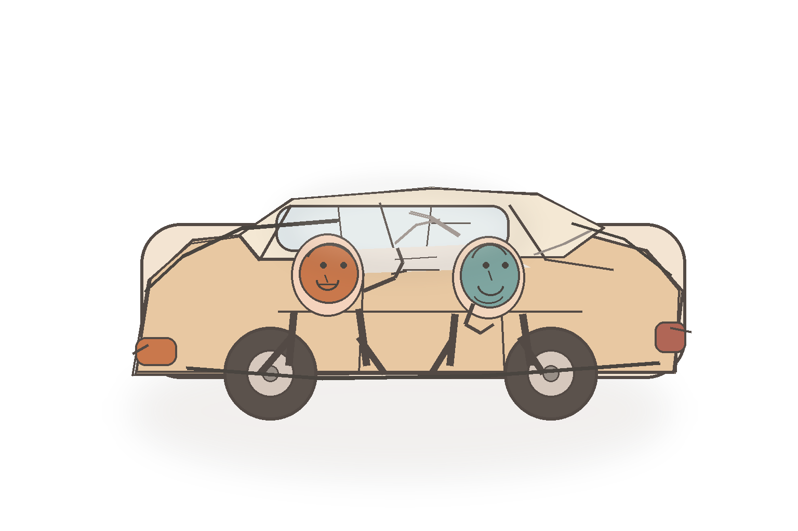

用 5 个问题，
穿透自己的判断
来自孟岩老师分享的一个小故事 · 方法教程体

［ A 暖插画位 · 车里两人对话 ］
朋友重仓一只票，我问了他 5 个问题——问到第 3 个，他就答不上来了。
01
事实依据
我到底知道什么？分清一手事实，还是推测、感觉、听来的。
02
推理链条
我是怎么得出这个结论的？逻辑链条中间有没有跳跃。
03
反方证据
如果我是错的，最强反证是什么？我是否选择性忽略了它。
05
下注代价
我愿意投入多少？代价是否匹配我的认知深度。
核心心法：不是为了证明自己对，而是接近真相、降低代价，做出更好的决策。
杰西卡聊AI